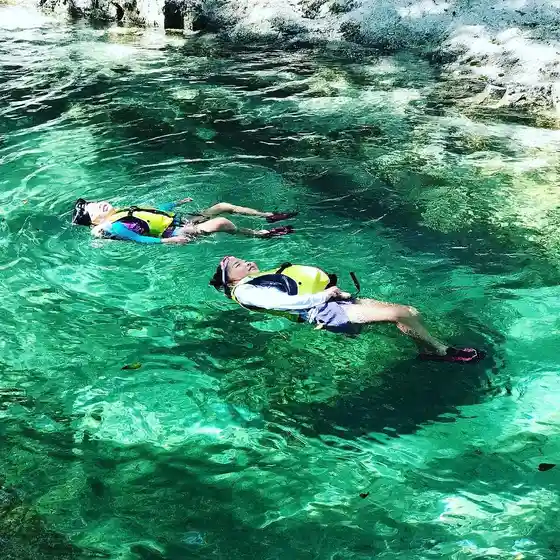
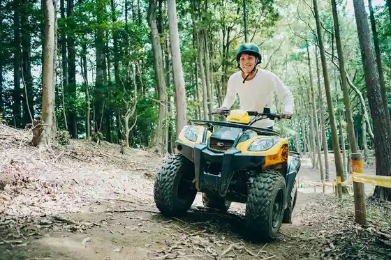
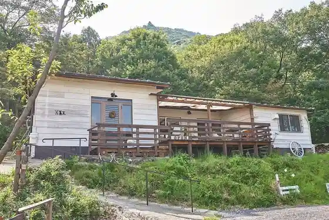
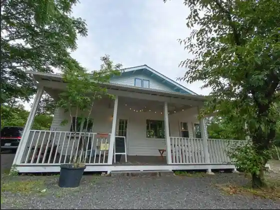

Happu Campground
Komono, Mie · 059-396-2788 · Official / source link

Kamoshikabagii
Komono, Mie · Official / source link

Yama Kujira Kafe
Komono, Mie · 059-340-5567 · Official / source link

Oliver Coffee
Komono, Mie · 070-1676-3250 · Official / source link

Kuni Shitei Tennenkinembutsu (Denko no Shidekobushi Oyobi Shitchi Shokubutsu Gunraku)
Komono, Mie · Official / source link
O Zaisho Ropuei
Komono, Mie · 059-392-2261 · Official / source link
” Suzuka Sanmyaku Hatsu ” (Itadaki) Wo Mezasu Subete no Nin no Enerugii Ni ! Mieken no Shinmeibutsu (Itadaki Andonatsu) 3 Gatsu 6 Nichi (Kin) Hatsubai !
Komono, Mie · Official / source link
Adobencha Park Odoru Forest
Komono, Mie · Official / source link
Akuaigunisu
Komono, Mie · 059-394-7733 · Official / source link
Foresutoadobencha Yu no Yama
Komono, Mie · Official / source link
SENBEI FACTORY SHOP Nichi no Shutsu Ya Seika
Komono, Mie · Official / source link
O Zaisho Gaku Tembo Terasu (COCORU Terasu) (Terasu Dekki Buranko)
Komono, Mie · 059-392-2261 · Official / source link
Suzuka Sukai Line
Komono, Mie · 059-394-0050 · Official / source link
Torii Dosan Campground
Komono, Mie · 059-392-2292 · Official / source link
O Zaisho Gaku
Komono, Mie · 059-394-0050 · Official / source link
Tomoaki Gorge
Komono, Mie · 059-393-1786 · Official / source link
Fu Re Ishi
Komono, Mie · 059-394-0050 · Official / source link
Yu no Yama Onsen Guriin Hotel Tenisukoto
Komono, Mie · 0570-200-786 · Official / source link
TSUJIGUCHI FARM
Komono, Mie · 059-325-7373 · Official / source link
O Zaisho Ski Area
Komono, Mie · 059-392-2261 · Official / source link
O Zaisho Yamagami Kanko Rifuto
Komono, Mie · 059-392-2261 · Official / source link
Odaka Campground
Komono, Mie · 059-396-3900 · Official / source link
Gozaisho Shizengaku Ko
Komono, Mie · 080-1623-4916 · Official / source link
FREE AND EASY CAMP RESORT
Komono, Mie · 059-391-6363 · Official / source link
Paramita Museum (paramita museum)
Komono, Mie · 059-391-1088 · Official / source link
Kamagagaku
Komono, Mie · 059-394-0050 · Official / source link
Dainichi Do Keidai no Gohyaku Rakan
Komono, Mie · 059-396-0837 · Official / source link
Yu no Yama Joba Club
Komono, Mie · 059-394-3370 · Official / source link
Tokaishizenhodo
Komono, Mie · 059-391-1129 · Official / source link
Roadside Station Komono
Komono, Mie · 059-394-0116 · Official / source link
Fukuo Shrine
Komono, Mie · 059-396-1269 · Official / source link
Odaka Kannon
Komono, Mie · 059-396-0078 · Official / source link
Shakagagaku
Komono, Mie · 059-391-1129 · Official / source link
Tomoaki Chaya Campground
Komono, Mie · 059-393-1789 · Official / source link
Oishi Park
Komono, Mie · 059-391-1129 · Official / source link
Mieken Tami Forest
Komono, Mie · 059-394-2350 · Official / source link
Torasan Memorial Museum
Komono, Mie · 059-392-2115 · Official / source link
Manga Library Namida Saka
Komono, Mie · 059-392-2115 · Official / source link
Denko no Shidekobushi Oyobi Shitchi Shokubutsu Gunraku
Komono, Mie · 059-391-1129 · Official / source link
Namida Hashi Gyararii
Komono, Mie · Official / source link
Jizo Iwa
Komono, Mie · 059-394-0050 · Official / source link
Tomoaki Campground
Komono, Mie · Official / source link
Togei Village
Komono, Mie · 059-391-1129 · Official / source link
Guriin Land Asake
Komono, Mie · 059-394-2792 · Official / source link
Tomoaki Rojji
Komono, Mie · 059-394-3012 · Official / source link
Tonai Koya
Komono, Mie · Official / source link
Nekotani Daiichi Entei Oyobi Nekotani Daini Entei
Komono, Mie · 059-391-1160 · Official / source link
Kamagagaku Buna Genshi Hayashi
Komono, Mie · 059-391-1129 · Official / source link
Tonai Kabe
Komono, Mie · 059-394-0050 · Official / source link
Tomoaki Sabo Gakushu Zon
Komono, Mie · 059-394-0050 · Official / source link
Ao Taki
Komono, Mie · 059-392-2115 · Official / source link
Kensho Tera
Komono, Mie · 0593-94-1755 · Official / source link
Kani Ike
Komono, Mie · 059-394-0050 · Official / source link